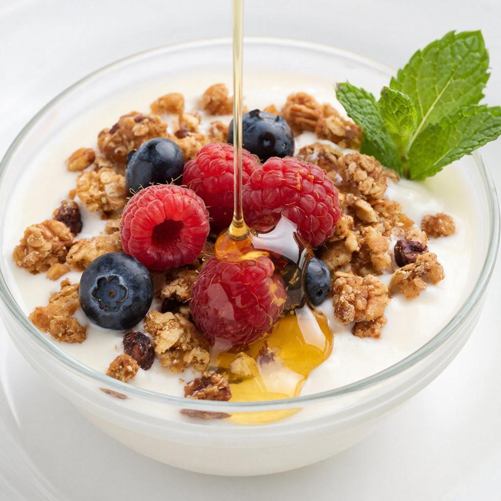
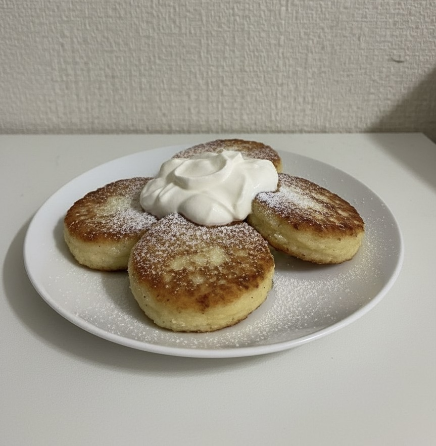

🍳 Рецепт дня

📝 Ингредиенты:
- Гранола (готовая) - 80 г
- Греческий йогурт - 50 г
- Малина/голубика свежая
- Мята - несколько листиков
- Мёд - 1 ч. ложка (по желанию)
👩🍳 Приготовление:
- В глубокую тарелку выложите греческий йогурт.
- Сверху посыпьте гранолой.
- Промойте ягоды и аккуратно выложите сверху.
- Украсьте листиками мяты и полейте мёдом.
- Подавайте сразу, чтобы гранола оставалась хрустящей.
🔥 Все рецепты
📝 Ингредиенты:
- Замороженные ягоды (клубника, малина) - 150 г
- Замороженный банан - 1 шт.
- Йогурт натуральный - 100 мл
- Украшение(топпинги): гранола, ягоды, кокосовая стружка.
👩🍳 Приготовление:
- Налейте в блендер йогурт, замороженные ягоды, банан и начинайте взбивать, начинайте с низкой скорости, постепенно увеличивая её.
- Если блендер не справляется, добавьте еще 1–2 столовые ложки жидкости, но не переборщите, чтобы масса осталась густой.
- Переложите густую массу в глубокую тарелку.
- Украсьте свежими ягодами, кокосовой стружкой или гранолой (по желанию).
- Подавайте немедленно, пока основа не растаяла.
📝 Ингредиенты:
- Хлеб для тостов - 2 ломтика
- Авокадо - 1/2 или 1 шт.
- Яйцо - 1-2 шт.
- Лимонный сок - 1 ч. ложка
- Соль, перец - по вкусу
- Уксус (для пашота) - 1 ст. ложка
- Дополнительно(по желанию): твороженый сыр, слабосоленый лосось, помидоры черри или микрозелень.
👩🍳 Приготовление:
- Поджарьте хлеб в тостере или на сухой сковороде.
- Разомните авокадо вилкой, добавьте лимонный сок, соль и перец.
- Для яйца пашот: вскипятите воду и добавьте уксус, сделайте воронку, влейте в нее яйцо и варите 2-3 минуты.
- Намажьте авокадо на тост, сверху выложите яйцо пашот.
- Посыпьте перцем и любимыми специями.
- По желанию можно добавить твороженый сыр, слабосоленый лосось, помидоры черри или микрозелень (в подсчете калорий ничего из представленного не учитывалось).
- Подавайте сразу.
📝 Ингредиенты:
- Овсяные хлопья (долгой варки) - 1-2 ст. ложки
- Йогурт - 100 г
- Мёд - 1 ч. ложка
- Семена чиа - 1-2 ч. ложка
- Ягоды для украшения
👩🍳 Приготовление:
- Насыпьте в подходящую посуду овсянку, семена чиа и добавьте мед.
- Залейте смесь йогуртом. Тщательно перемешайте ложкой или встряхните банку с закрытой крышкой, чтобы не осталось комочков чиа.
- Плотно закройте банку и уберите в холодильник минимум на 4 часа, а лучше на всю ночь (8–10 часов).
- Утром достаньте, перемешайте, добавьте свежие ягоды.
- Подавайте.
📝 Ингредиенты:
- Яйца - 4 шт.
- Томаты в собственном соку - 400 г
- Лук - 1 шт.
- Перец болгарский - 1 шт.
- Чеснок - 2 зубчика
- Паприка, соль, перец - по вкусу
👩🍳 Приготовление:
- Мелко нарежьте лук и чеснок. Обжарьте их на сковороде с маслом до золотистого цвета.
- Добавьте перец и готовьте еще 5 минут, пока он не станет мягким.
- Добавьте томаты в собственном соку. Посолите, добавьте специи и прогрейте на среднем огне 8-12 минут до заметного загустения.
- Сделайте ложкой небольшие углубления и аккуратно влейте яйца.
- Накройте крышкой и готовьте 5-7 минуты, пока белок не схватится, а желток останется жидким.
- Посыпте зеленью и подавайте прямо на сковороде с хлебом.
📝 Ингредиенты:
- Хлеб (батон) - 4 ломтика
- Яйцо - 1-2 шт.
- Молоко - 70 мл
- Масло сливочное - 10 г
- Сахар - 1 ст. ложка
- Соль - по вкусу
👩🍳 Приготовление:
- Нарежьте хлеб ломтиками толщиной около 1,5–2 см.
- В глубокой миске взбейте яйца с сахаром и солью до однородности.
- В яичную смесь влейте молока и хорошо перемешайте.
- Каждый ломтик хлеба обмакните в яично-молочную смесь с обеих сторон. Не держите слишком долго, чтобы хлеб не размок.
- Разогрейте сковороду со сливочным маслом. Обжарьте гренки по 1–2 минуты с каждой стороны до золотистой корочки.
- Переложите готовые гренки на бумажное полотенце, чтобы убрать лишний жир.
- Подавайте горячими.

📝 Ингредиенты:
- Творог 9% - 500 г
- Яйцо - 1 шт.
- Манка - 2 ст. ложки
- Сахар - 1 ст. ложки
- Ванилин - 1 пакетик
👩🍳 Приготовление:
- Смешайте творог, яйцо, сахар, ванилин и манку, вилкой перемешайте массу.
- Оставьте твороженую массу на 5-10 минут для того чтобы манка набухла.
- Разделите твороженую массу на равные части, сформируйте сырники.
- Обжарьте сырники на скородке на растительном масле на среднем огне до золотистой корочки.
- Подавайте сразу.
📊 Калорийность блюд
🔥 Энергетическая ценность на порцию
| Блюдо | Белки | Жиры | Углеводы | Ккал |
|---|---|---|---|---|
| Гранола с йогуртом и ягодами | 12 г | 22 г | 42 г | 421 ккал |
| Ягодный смузи-бол | 8 г | 4 г | 42 г | 240 ккал |
| Тост с авокадо и яйцом пашот | 16 г | 34 г | 20 г | 490 ккал |
| Ленивая овсянка в банке | 10 г | 10 г | 31 г | 258 ккал |
| Шакшука | 19 г | 16 г | 17 г | 301 ккал |
| Сладкие гренки | 16 г | 20 г | 63 г | 507 ккал |
| Сырники | 60 г | 32 г | 36 г | 440 ккал |
* Данные приблизительные и могут варьироваться в зависимости от ингредиентов и пропорций.
👨🍳 Советы шеф-повара
💡 Идеальный завтрак
- Завтракайте в течение часа после пробуждения
- Сочетайте белки, жиры и сложные углеводы
- Пейте стакан воды за 20 минут до еды
- Не пропускайте завтрак — это главный прием пищи!
🥑 Лайфхаки для рецептов
- Авокадо будет мягче, если подержать его рядом с бананом
- Для идеального пашота добавляйте уксус в воду
- Для того чтобы у гренок вкус стал насыщеннее, можно добавить в яичную смесь немного ванилина и корицы
- Чтобы сырники не распадались, выбирать нужно сухой творог. Если творог слишком влажный, следует отжать его через марлю.
⚡ Быстрые замены
- Йогурт → растительный йогурт (для веганов)
- Мёд → кленовый сироп или стевия
- Пшеничный хлеб → цельнозерновой или безглютеновый
📅 Недельное меню
🗓️ План завтраков на 7 дней
🌿 Сезонные рекомендации
🌸 Весна
Добавляйте свежую зелень в смузи и тосты — это заряд витаминов после зимы.
☀️ Лето
Освежающие смузи-болы с сезонными ягодами — идеальный летний завтрак.
🍂 Осень
Добавляйте тыквенное пюре в овсянку или запекайте яблоки с корицей.
❄️ Зима
Горячие бутерброды и сырники согревают, а цитрусовые заряжают витамином C.
❓ Часто задаваемые вопросы
🍽️ Можно ли приготовить с вечера?
- Смузи-бол — лучше готовить утром, иначе теряет текстуру
- Овсянка в банке — идеально готовить на ночь
- Сырники — можно заморозить полуфабрикаты
🥑 Чем заменить авокадо?
- Паштет из нута (хумус) — отличная альтернатива
- Запеченный сладкий перец
- Сыр рикотта с зеленью
🏃♀️ Какой завтрак для спортсменов?
- Гранола с йогуртом + протеиновый порошок
- Сырники с рисовой мукой и творогом 9%
- Овсянка с орехами и бананом
📝 Полезные заметки
💧 Водный баланс
Начинайте утро со стакана теплой воды с лимоном — это запускает метаболизм и улучшает пищеварение. Через 20-30 минут можно завтракать.
⏰ Идеальное время
Лучшее время для завтрака — с 7:00 до 9:00 утра. Это период, когда организм лучше всего усваивает питательные вещества.
⚖️ Контроль порций
Размер порции не должен превышать размер вашего кулака. Сбалансированный завтрак = 1/2 тарелки овощей/фруктов, 1/4 белка, 1/4 углеводов.